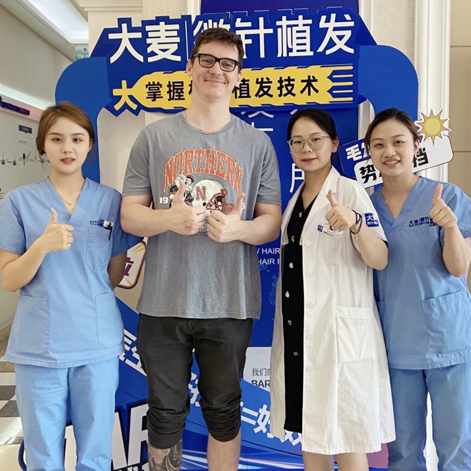

Deciding to undergo a hair transplant is a significant commitment, and understanding what lies ahead at each milestone can transform your experience. At Barley Hospital, we guide you through every stage with complete openness — from your very first discussion all the way through to your ultimate outcome twelve to fifteen months later.
Whether you're arriving from another country or journeying domestically, our staff manages all the details so your experience remains effortless and comfortable. This overview addresses everything you should understand: what lies ahead, how to ready yourself, and how to care for yourself throughout the healing period.
Thorough groundwork creates the foundation for outstanding outcomes
Everything begins with an in-depth consultation — you can connect with us remotely using photographs and a video session, or come to one of our facilities personally. Your surgeon will evaluate your scalp health, measure your donor area density, study your hair texture and calibre, and determine the extent of your hair loss. We employ digital visualisation tools to display what your outcome might resemble, giving you a vivid understanding before we proceed. Together, you'll select the most suitable technique for your circumstances (FUE or DHI), agree on the graft count required, and develop a tailored treatment strategy with straightforward pricing.
Fourteen days ahead of your operation, we'll forward you a thorough readiness checklist. You'll need to cease smoking and reduce alcohol consumption, as both can impede the healing process. Seven days prior to surgery, discontinue any blood-thinning substances such as aspirin, ibuprofen, or vitamin E capsules. Three days beforehand, eliminate caffeine and alcohol entirely. The evening before, ensure you receive ample sleep, consume a nutritious meal, and cleanse your hair completely.
For those arriving from another country, we manage the entire arrangement — airport collection, hotel reservation near the facility, and a bilingual coordinator to assist you in getting settled. On the day you arrive, you'll undergo a concluding in-person evaluation, any required pre-operative blood tests, and pre-surgery photographs captured from several angles.
Arrive following a modest breakfast. The operative crew will review your strategy once more, address any final concerns, and your surgeon will trace your new hairline directly onto your scalp using a surgical marker. You'll have the opportunity to examine and confirm the layout before anything commences. Subsequently, local anaesthesia is meticulously administered to both the donor area (the rear of your head) and the recipient area (where the grafts will be positioned). You'll experience a handful of brief pinches lasting roughly 30–60 seconds, and then the region becomes entirely numb — from that moment forward, you won't experience any discomfort.
Utilising precision micro-punch instruments, the operative crew removes individual follicular units sequentially from the donor area. Each graft is extracted at the correct angle and depth to preserve the follicle's integrity. The instant a graft is removed, it's immersed in a specialised preservation solution and then categorised by a group of skilled technicians operating under microscopes. This portion of the procedure generally spans 2–4 hours, contingent upon the quantity of grafts being transplanted.
Your surgeon creates thousands of minute openings in the recipient area, each positioned at an exact angle and trajectory to align with your inherent hair growth direction. The grafts are then delicately positioned into these openings using either forceps or Choi implant pens (for the DHI technique). This phase demands exceptional expertise — every individual graft must rest at the proper angle, depth, and orientation for the outcome to appear entirely authentic. The entire operation spans 4–8 hours overall.
You're welcome to enjoy music, view content on a tablet, or even rest while we proceed. The crew schedules regular pauses for refreshments and meals, and you're invited to participate.
Depart with straightforward aftercare guidelines. Rest with your head raised at a 45-degree angle. Minor seepage of clear fluid is entirely expected. Consume your prescribed medications on schedule. Refrain from contacting or scratching the treated zone.
Forehead inflammation may reach its peak during this window. Begin applying the saline mist spray as directed. Some firmness around the donor area is anticipated. Continue your medication regimen. Refrain from bending forward or raising heavy objects. Gentle strolls are recommended.
Begin cleansing your hair delicately with the provided shampoo. Tiny scabs will start developing. The inflammation subsides. The majority of patients resume office duties by this point. Avoid direct sunlight and refrain from intense physical exertion.
The patience phase — your outcomes are forming beneath the surface
By the conclusion of the second week, the majority of scabs will have detached independently. The treated zone may appear reddish or faintly pink, though this diminishes progressively over the coming weeks. At this stage, the transplanted hairs are securely anchored.
The transplanted hairs begin to fall out — this phenomenon is known as shock loss, and it's entirely natural. There's no cause for alarm. The follicles remain active and vigorous beneath the scalp; they're simply pausing before fresh growth initiates. Numerous patients consider this the most psychologically demanding phase, but understanding it's an expected occurrence makes it considerably simpler to manage.
Your scalp appears largely returned to its usual state. The follicles are dormant beneath the skin, preparing to generate fresh hair. Certain individuals still observe some lingering redness that continues to fade. You may resume most regular routines, including physical activity.
This marks the thrilling milestone — fresh hair begins emerging. Initially, it may appear delicate and lighter in shade than anticipated. These represent early indicators that your follicles have established themselves and are functioning. Expansion tends to be limited at this point, but it accelerates consistently from here onward.
The fresh hair becomes noticeably thicker and richer in colour. You'll begin observing genuine progress, and those around you will notice as well. Density improves substantially throughout this window. Numerous patients share that this is the period when their self-assurance genuinely returns.
This marks the period when the transformation becomes unmistakable. Hair density escalates dramatically, and the fresh growth integrates flawlessly with your remaining hair. Your hairline begins appearing authentic and refined. Most patients feel genuinely pleased with how matters are advancing by this stage.
Your outcomes are approaching their ultimate form. Hair thickness, density, and texture continue maturing. The transplanted zone appears entirely authentic. You may trim, groom, and manage your fresh hair exactly like the remainder of your natural hair.
Your transplant has arrived at its mature, permanent state. The results are enduring — the transplanted hair will continue developing throughout your lifetime, identical to the hair in your donor area. You now possess a complete, naturally-appearing head of hair.
From your introductory meeting to your ultimate outcome — we clarify every phase

From the instant you reach out to the day you witness your ultimate outcome, every phase is thoughtfully organised and supervised by our seasoned professionals. We maintain that well-informed clients achieve superior results, which is why we preserve complete openness throughout the entire journey.
We handle every detail so you can concentrate on your recovery
The entire schedule from beginning to end
Virtual or face-to-face assessment
Adhere to pre-op directives for 14 days
We manage collection, lodging, coordination
Comfortable 4-8 hour session
3-5 days before resuming work
Fresh growth at 3-4 months, complete results at 12-15
Industry pioneers with a reputation you can rely on
Leading the way in microneedle hair transplant technology since 2006
Situated in prominent cities throughout China, each upholding identical quality benchmarks
Cutting-edge microneedle and implant pen frameworks for superior outcomes
Relied upon by clients globally for consistently exceptional outcomes
Full English assistance for global clients from beginning to conclusion
Contemporary facilities and strict safety measures for your complete confidence
Witness the remarkable changes our patients have accomplished


Memorable moments alongside our pleased patients

Patient displaying their authentic-looking transplant

Thankful patient celebrating their refreshed appearance

Proud patient with their revitalised hairline

Patient presenting their striking transformation

Overseas guest thrilled with their outcome

Patient grinning with their fresh, authentic hair

Contented patient alongside our medical crew

Patient presenting their triumphant restoration
Genuine accounts from clients across the globe
"Dr. Chen devoted more than an hour simply designing my hairline during the evaluation, clarifying precisely how many grafts I would require and the reasoning behind it. When procedure day arrived, everything from the anaesthesia through the graft positioning felt systematic and entirely without discomfort. I never once doubted what was taking place."
"I genuinely anticipated the extraction would be unpleasant, yet the local anaesthetic was exceptional. I reclined, enjoyed some tunes, and actually drifted off during the six-hour session. The crew kept verifying my comfort level throughout. I couldn't have wished for a superior experience."
"The pre-operative guidelines were remarkably comprehensive. I understood precisely which medications to discontinue, how to ready my scalp, and what would transpire upon arrival. Throughout the operation, the crew described each phase before commencing — anaesthesia, extraction, forming the recipient sites, then placement. Nothing seemed hurried or bewildering."
"The recovery proved far simpler than I had envisioned. The first day brought minor swelling, yet the crew supplied me with a precise aftercare timetable including exact timings for saline sprays and medications. By the third day I felt entirely normal again. The follow-up calls from the care staff were a thoughtful addition — they made me feel genuinely well-cared-for."
"The DHI technique truly amazed me. The surgeon employed Choi implant pens to position every individual graft at the precise angle necessary for authentic growth. The accuracy is evident in the outcomes — at nine months post-operation, my hairline appears entirely natural. No one would ever suspect it was a transplant."
"What struck me most was how effectively the operative crew collaborated. While the surgeon was forming recipient sites, four technicians were simultaneously preparing and categorising grafts by hair count. That degree of organisation ensures each graft spends minimal time outside the body, which directly influences survival rates. Genuinely polished from beginning to end."
"I felt anxious about recovery, yet the post-operative care proved exceptional. The crew forwarded me a day-by-day manual with photographs illustrating precisely what to anticipate at each phase. When I had queries regarding swelling on the second day, they responded within minutes via WhatsApp. I never felt as though I was navigating things independently."
Contemporary, welcoming spaces crafted for your wellbeing

Our cutting-edge medical centre

Unwind in our premium seating area

Sterile and comprehensively outfitted

Confidential and polished environment

Comfortable post-treatment space

Friendly and inviting entrance
Frequent enquiries regarding the hair transplant journey and healing period
Reach out for a no-cost evaluation
15810155700
+86 13730143529
hairtransplant@qq.com